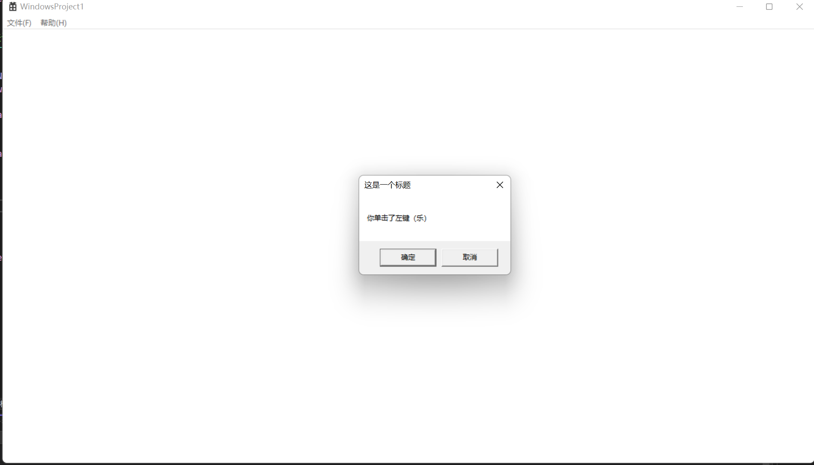

Windows-API-程序设计（1）
系统学习Windows API
数据类型一看
原生C数据类型
int float double ... Windows自己的：
BOOL BYTE CHAR CONST DWORD DOWRD32 DWORD64 FLOAT HANDLE HICON HINSTANCE
HKEY HMODULE HWND INT INT_PTR INT32 INT64 看看这个：
LPSTR szString = L"this is a long pointer to string."; 跳转得到：
//
// ANSI (Multi-byte Character) types
//
typedef CHAR *PCHAR, *LPCH, *PCH;
typedef CONST CHAR *LPCCH, *PCCH;
typedef _Null_terminated_ CHAR *NPSTR, *LPSTR, *PSTR; 进一步针对CHAR类型跳转
typedef char CHAR; 微软搞那么多宏，一方面是历史遗留，另一方面是方便他们的工程师更容易区分
Dword是这个东西：一个四个字节的数据类型
DWORD dwMax = 0xFFFFFFFFtypedef unsigned long DWORD; 于是INT就是有符号的，DWORD是无符号的。
#include<stdio.h>
#include<Windows.h>
int main()
{
LPSTR szString = L"this is a long pointer to string.";
INT a = 10;
DWORD dwMax = 0xFFFFFFFF;
MessageBox(NULL, szString, TEXT("LPSTR"), MB_OK);
} 在C中我们有：memcpy
在Windows下，有一个函数叫CopyMemory()
CopyMemory(IpStr, szString, lstrlen(szString) + 1); // add one to include the \0.#define CopyMemory RtlCopyMemory#define RtlCopyMemory(Destination,Source,Length) memcpy((Destination),(Source),(Length)) Handle,也就是句柄，是这样被定义的：
他有如下的句柄：
typedef void *HANDLE; HICON图标
DECLARE_HANDLE(HICON);
#define DECLARE_HANDLE(name) struct name##__{int unused;}; typedef struct name##__ *name HInstance实例句柄
DECLARE_HANDLE(HINSTANCE); HKey注册表的句柄
DECLARE_HANDLE(HKEY); Hmodule模块句柄
typedef HINSTANCE HMODULE; /* HMODULEs can be used in place of HINSTANCEs */ HWND窗口句柄
DECLARE_HANDLE (HWND);API基础函数
WindowAPI大量的使用了Windows的数据类型！所有的API都有W版和A版，分别表示的是支持Unicode字符集和ASCII多字节字符集。下面我们来看一个Windows自己创建的demo，选择Win32项目创建。看到主文件下：
// WindowsProject1.cpp : 定义应用程序的入口点。
//
#include "framework.h"
#include "WindowsProject1.h"
#define MAX_LOADSTRING 100
// 全局变量:
HINSTANCE hInst; // 当前实例
WCHAR szTitle[MAX_LOADSTRING]; // 标题栏文本
WCHAR szWindowClass[MAX_LOADSTRING]; // 主窗口类名
// 此代码模块中包含的函数的前向声明:
ATOM MyRegisterClass(HINSTANCE hInstance);
BOOL InitInstance(HINSTANCE, int);
LRESULT CALLBACK WndProc(HWND, UINT, WPARAM, LPARAM);
INT_PTR CALLBACK About(HWND, UINT, WPARAM, LPARAM);
int APIENTRY wWinMain(_In_ HINSTANCE hInstance,
_In_opt_ HINSTANCE hPrevInstance,
_In_ LPWSTR lpCmdLine,
_In_ int nCmdShow)
{
UNREFERENCED_PARAMETER(hPrevInstance);
UNREFERENCED_PARAMETER(lpCmdLine);
// TODO: 在此处放置代码。
// 初始化全局字符串
LoadStringW(hInstance, IDS_APP_TITLE, szTitle, MAX_LOADSTRING);
LoadStringW(hInstance, IDC_WINDOWSPROJECT1, szWindowClass, MAX_LOADSTRING);
MyRegisterClass(hInstance);
// 执行应用程序初始化:
if (!InitInstance (hInstance, nCmdShow))
{
return FALSE;
}
HACCEL hAccelTable = LoadAccelerators(hInstance, MAKEINTRESOURCE(IDC_WINDOWSPROJECT1));
MSG msg;
// 主消息循环:
while (GetMessage(&msg, nullptr, 0, 0))
{
if (!TranslateAccelerator(msg.hwnd, hAccelTable, &msg))
{
TranslateMessage(&msg);
DispatchMessage(&msg);
}
}
return (int) msg.wParam;
}
//
// 函数: MyRegisterClass()
//
// 目标: 注册窗口类。
//
ATOM MyRegisterClass(HINSTANCE hInstance)
{
WNDCLASSEXW wcex;
wcex.cbSize = sizeof(WNDCLASSEX);
wcex.style = CS_HREDRAW | CS_VREDRAW;
wcex.lpfnWndProc = WndProc;
wcex.cbClsExtra = 0;
wcex.cbWndExtra = 0;
wcex.hInstance = hInstance;
wcex.hIcon = LoadIcon(hInstance, MAKEINTRESOURCE(IDI_WINDOWSPROJECT1));
wcex.hCursor = LoadCursor(nullptr, IDC_ARROW);
wcex.hbrBackground = (HBRUSH)(COLOR_WINDOW+1);
wcex.lpszMenuName = MAKEINTRESOURCEW(IDC_WINDOWSPROJECT1);
wcex.lpszClassName = szWindowClass;
wcex.hIconSm = LoadIcon(wcex.hInstance, MAKEINTRESOURCE(IDI_SMALL));
return RegisterClassExW(&wcex);
}
//
// 函数: InitInstance(HINSTANCE, int)
//
// 目标: 保存实例句柄并创建主窗口
//
// 注释:
//
// 在此函数中，我们在全局变量中保存实例句柄并
// 创建和显示主程序窗口。
//
BOOL InitInstance(HINSTANCE hInstance, int nCmdShow)
{
hInst = hInstance; // 将实例句柄存储在全局变量中
HWND hWnd = CreateWindowW(szWindowClass, szTitle, WS_OVERLAPPEDWINDOW,
CW_USEDEFAULT, 0, CW_USEDEFAULT, 0, nullptr, nullptr, hInstance, nullptr);
if (!hWnd)
{
return FALSE;
}
ShowWindow(hWnd, nCmdShow);
UpdateWindow(hWnd);
return TRUE;
}
//
// 函数: WndProc(HWND, UINT, WPARAM, LPARAM)
//
// 目标: 处理主窗口的消息。
//
// WM_COMMAND - 处理应用程序菜单
// WM_PAINT - 绘制主窗口
// WM_DESTROY - 发送退出消息并返回
//
//
LRESULT CALLBACK WndProc(HWND hWnd, UINT message, WPARAM wParam, LPARAM lParam)
{
switch (message)
{
case WM_COMMAND:
{
int wmId = LOWORD(wParam);
// 分析菜单选择:
switch (wmId)
{
case IDM_ABOUT:
DialogBox(hInst, MAKEINTRESOURCE(IDD_ABOUTBOX), hWnd, About);
break;
case IDM_EXIT:
DestroyWindow(hWnd);
break;
default:
return DefWindowProc(hWnd, message, wParam, lParam);
}
}
break;
case WM_PAINT:
{
PAINTSTRUCT ps;
HDC hdc = BeginPaint(hWnd, &ps);
// TODO: 在此处添加使用 hdc 的任何绘图代码...
EndPaint(hWnd, &ps);
}
break;
case WM_DESTROY:
PostQuitMessage(0);
break;
default:
return DefWindowProc(hWnd, message, wParam, lParam);
}
return 0;
}
// “关于”框的消息处理程序。
INT_PTR CALLBACK About(HWND hDlg, UINT message, WPARAM wParam, LPARAM lParam)
{
UNREFERENCED_PARAMETER(lParam);
switch (message)
{
case WM_INITDIALOG:
return (INT_PTR)TRUE;
case WM_COMMAND:
if (LOWORD(wParam) == IDOK || LOWORD(wParam) == IDCANCEL)
{
EndDialog(hDlg, LOWORD(wParam));
return (INT_PTR)TRUE;
}
break;
}
return (INT_PTR)FALSE;
} 我们尝试加点东西，留心到
LRESULT CALLBACK WndProc(HWND hWnd, UINT message, WPARAM wParam, LPARAM lParam) 在switch语句下面添加点东西（有注释//）:
LRESULT CALLBACK WndProc(HWND hWnd, UINT message, WPARAM wParam, LPARAM lParam)
{
LPCWSTR msg_str1 = L"你单击了左键（乐）";//
LPCWSTR msg_str2 = L"你单击了右键（乐）";//
LPCWSTR title_str = L"这是一个标题";//
switch (message)
{
case WM_COMMAND:
{
int wmId = LOWORD(wParam);
// 分析菜单选择:
switch (wmId)
{
case IDM_ABOUT:
DialogBox(hInst, MAKEINTRESOURCE(IDD_ABOUTBOX), hWnd, About);
break;
case IDM_EXIT:
DestroyWindow(hWnd);
break;
default:
return DefWindowProc(hWnd, message, wParam, lParam);
}
}
break;
case WM_PAINT:
{
PAINTSTRUCT ps;
HDC hdc = BeginPaint(hWnd, &ps);
// TODO: 在此处添加使用 hdc 的任何绘图代码...
EndPaint(hWnd, &ps);
}
break;
case WM_DESTROY:
PostQuitMessage(0);
break;
case WM_LBUTTONDOWN://
MessageBoxW(NULL,msg_str1,title_str, MB_OKCANCEL);//
break;//
case WM_RBUTTONDOWN://
MessageBoxW(NULL, msg_str2, title_str, MB_OKCANCEL);//
break;//
default:
return DefWindowProc(hWnd, message, wParam, lParam);
}
return 0;
} 但是我们频繁点击会产生大量的窗口！那就更改父窗口就好了，传入一个句柄！
case WM_LBUTTONDOWN:
MessageBoxW(hWnd,msg_str1,title_str, MB_OKCANCEL);
break;
case WM_RBUTTONDOWN:
MessageBoxW(hWnd, msg_str2, title_str, MB_OKCANCEL);
break; 现在就好了！


读取文件demo
在Windows下，使用
CreateFile 宏来打开并创建一个文件句柄！
from Microsoft API
read file
我们使用readFile来读取文件：
#include<Windows.h>
#include<stdio.h>
#include<iostream>
#define BUFSIZE 256
#include<tchar.h>11
int main()
{
setlocale(LC_ALL, "zh_CN.UTF-8"); // 设置正确的编码环境，防止读取乱码！
HANDLE hFileRead;
// 创建文件句柄
hFileRead = CreateFile(L"1.txt", GENERIC_READ, FILE_SHARE_READ, \
NULL, OPEN_EXISTING, FILE_ATTRIBUTE_NORMAL, NULL);
if (hFileRead == INVALID_HANDLE_VALUE) {
printf("Error in open the file:%x",GetLastError());
}
DWORD nIn = 0;
CHAR buffer[BUFSIZE];
while (ReadFile(hFileRead, buffer, BUFSIZE, &nIn, NULL) && nIn > 0) {
printf("%s\n", buffer);
}
CloseHandle(hFileRead);
}

createFileW 函数 (fileapi.h)
创建或打开文件或 I/O 设备。 最常用的 I/O 设备如下所示：文件、文件流、目录、物理磁盘、卷、控制台缓冲区、磁带驱动器、通信资源、mailslot 和管道。 该函数返回一个句柄，该句柄可用于访问不同类型的 I/O 的文件或设备，具体取决于文件或设备以及指定的标志和属性。
若要将此操作作为事务处理操作执行，这会导致可用于事务处理 I/O 的句柄，请使用 CreateFileTransacted 函数。
HANDLE CreateFileW(
[in] LPCWSTR lpFileName,
[in] DWORD dwDesiredAccess,
[in] DWORD dwShareMode,
[in, optional] LPSECURITY_ATTRIBUTES lpSecurityAttributes,
[in] DWORD dwCreationDisposition,
[in] DWORD dwFlagsAndAttributes,
[in, optional] HANDLE hTemplateFile
);参数
[in] lpFileName
要创建或打开的文件或设备的名称。 可以在此名称中使用正斜杠 (/) 或反斜杠 () 。
在此函数的 ANSI 版本中，名称限制为 MAX_PATH 个字符。 若要将此限制扩展到 32，767 宽字符，请使用此 Unicode 版本的函数，并将“\\？\”前面附加到路径。 有关详细信息，请参阅命名文件、路径和命名空间。
有关特殊设备名称的信息，请参阅 定义 MS-DOS 设备名称。
若要创建文件流，请指定文件的名称、冒号，然后指定流的名称。 有关详细信息，请参阅 文件流。
提示从Windows 10版本 1607 开始，对于此函数的 unicode 版本 (CreateFileW) ，你可以选择加入以删除MAX_PATH限制，而无需附加“\\？\”。 有关详细信息，请参阅 命名文件、路径和命名空间 的“最大路径长度限制”部分。
[in] dwDesiredAccess
请求对文件或设备的访问权限，可汇总为读取、写入或两者均不) 。
最常用的值是 GENERIC_READ、 GENERIC_WRITE或两者 () GENERIC_READ | GENERIC_WRITE 。 有关详细信息，请参阅 通用访问权限、 文件安全性和访问权限、 文件访问权限常量和 ACCESS_MASK。
如果此参数为零，则应用程序可以在不访问该文件或设备的情况下查询某些元数据，例如文件、目录或设备属性，即使 拒绝了GENERIC_READ 访问。
不能请求与已打开句柄的打开请求中 dwShareMode 参数指定的共享模式冲突的访问模式。
有关详细信息，请参阅本主题的“备注”部分和 “创建和打开文件”。
[in] dwShareMode
文件或设备请求的共享模式，可以读取、写入、删除、所有这些或无 (引用下表) 。 对属性或扩展属性的访问请求不受此标志的影响。
如果此参数为零且 CreateFile 成功，则文件或设备无法共享，并且无法在文件或设备的句柄关闭之前再次打开。 有关详细信息，请参见“备注”部分。
无法请求与具有打开句柄的现有请求中指定的访问模式冲突的共享模式。 CreateFile 将失败， GetLastError 函数将返回 ERROR_SHARING_VIOLATION。
若要启用进程在打开文件或设备时共享文件或设备，请使用以下一个或多个值的兼容组合。 有关此参数与 dwDesiredAccess 参数的有效组合的详细信息，请参阅 创建和打开文件。
注意 无论进程上下文如何，每个打开句柄的共享选项都将有效，直到该句柄关闭。
| Value | 含义 |
|---|---|
| 00x00000000 | 如果文件或设备请求删除、读取或写入访问权限，则阻止对文件或设备上的后续打开操作。 |
| FILE_SHARE_DELETE0x00000004 | 在文件或设备上启用后续打开操作以请求删除访问权限。否则，如果文件或设备请求删除访问权限，则无法打开该文件或设备。如果未指定此标志，但文件或设备已打开以删除访问权限，则函数将失败。注意 删除访问权限允许删除和重命名操作。 |
| FILE_SHARE_READ0x00000001 | 在文件或设备上启用后续打开操作以请求读取访问权限。否则，如果文件或设备请求读取访问权限，则无法打开该文件或设备。如果未指定此标志，但文件或设备已打开以供读取访问，则函数将失败。 |
| FILE_SHARE_WRITE0x00000002 | 在文件或设备上启用后续打开操作以请求写入访问权限。否则，如果文件或设备请求写入访问权限，则无法打开该文件或设备。如果未指定此标志，但文件或设备已打开进行写入访问或具有写入访问权限的文件映射，则函数将失败。 |
[in, optional] lpSecurityAttributes 指向包含两个独立但相关数据成员的 SECURITY_ATTRIBUTES) 结构的指针：可选的安全描述符，以及一个布尔值，该值确定返回的句柄是否可以由子进程继承。
此参数可以为 NULL。
如果此参数为 NULL，则 由 CreateFile 返回的句柄不能由应用程序可能创建的任何子进程继承，并且与返回的句柄关联的文件或设备获取默认的安全描述符。
结构的 lpSecurityDescriptor 成员指定文件或设备的 SECURITY_DESCRIPTOR 。 如果此成员为 NULL，则会为与返回的句柄关联的文件或设备分配一个默认的安全描述符。
CreateFile 在打开现有文件或设备时忽略 lpSecurityDescriptor 成员，但继续使用 bInheritHandle 成员。
结构的 bInheritHandle 成员指定是否可以继承返回的句柄。
有关详细信息，请参见“备注”部分。
[in] dwCreationDisposition 对存在或不存在的文件或设备执行的操作。
对于文件以外的设备，此参数通常设置为 OPEN_EXISTING。
有关详细信息，请参见“备注”部分。
此参数必须是以下值之一，不能合并：
| Value | 含义 |
|---|---|
| CREATE_ALWAYS2 | 始终创建新文件。如果指定的文件存在且可写，则函数将覆盖文件、函数成功，最后错误代码设置为 ERROR_ALREADY_EXISTS (183) 。如果指定的文件不存在且路径有效，则会创建一个新文件，该函数成功，最后一个错误代码设置为零。有关详细信息，请参阅本主题的“备注”部分。 |
| CREATE_NEW1 | 仅当该文件尚不存在时才创建一个新文件。如果指定的文件存在，函数将失败，最后一个错误代码设置为 ERROR_FILE_EXISTS ( 80) 。如果指定的文件不存在并且是可写位置的有效路径，则会创建新文件。 |
| OPEN_ALWAYS4 | 始终打开文件。如果指定文件存在，则函数成功，最后一个错误代码设置为 ERROR_ALREADY_EXISTS ( 183) 。如果指定的文件不存在并且是可写位置的有效路径，则函数将创建一个文件，最后一个错误代码设置为零。 |
| OPEN_EXISTING3 | 仅当文件或设备存在时，才打开该文件或设备。如果指定的文件或设备不存在，函数将失败，最后一个错误代码设置为 ERROR_FILE_NOT_FOUND ( 2) 。有关设备的详细信息，请参阅“备注”部分。 |
| TRUNCATE_EXISTING5 | 打开文件并截断该文件，使其大小为零字节，仅当它存在时。如果指定的文件不存在，函数将失败，最后一个错误代码设置为 ERROR_FILE_NOT_FOUND (2) 。调用过程必须打开文件，并将 GENERIC_WRITE 位设置为 dwDesiredAccess 参数的一部分。 |
[in] dwFlagsAndAttributes 文件或设备属性和标志， FILE_ATTRIBUTE_NORMAL 是文件最常见的默认值。
此参数可以包含可用文件属性的任意组合， (FILE_ATTRIBUTE_*) 。 所有其他文件属性都替代 FILE_ATTRIBUTE_NORMAL。
此参数还可以包含标志组合 ， (FILE_FLAG_) 来控制文件或设备缓存行为、访问模式和其他特殊用途标志。 这些值与任何 FILE_ATTRIBUTE_ 值结合使用。
此参数还可以通过指定 SECURITY_SQOS_PRESENT 标志来包含安全服务质量 (SQOS) 信息。 下表显示了其他与 SQOS 相关的标志信息，这些属性和标志表如下。
注意当CreateFile 打开现有文件时，它通常将文件标志与现有文件的文件属性组合在一起，并忽略作为 dwFlagsAndAttributes 的一部分提供的任何文件属性。 “创建和打开文件”中详细介绍了特殊情况。
以下某些文件属性和标志只能应用于文件，不一定是 CreateFile 可以打开的所有其他类型的设备。 有关详细信息，请参阅本主题的“备注”部分和 “创建和打开文件”。
有关对文件属性的更高级访问，请参阅 SetFileAttributes。 有关所有文件属性及其值和说明的完整列表，请参阅 文件属性常量。
| Attribute | 含义 |
|---|---|
| FILE_ATTRIBUTE_ARCHIVE32 (0x20) | 该文件应存档。 应用程序使用此属性来标记要备份或删除的文件。 |
| FILE_ATTRIBUTE_ENCRYPTED16384 (0x4000) | 此文件或目录已加密。 对于文件来说，表示文件中的所有数据都是加密的。 对于目录，这意味着加密是新创建的文件和子目录的默认值。 有关详细信息，请参阅 文件加密。如果还指定 了FILE_ATTRIBUTE_SYSTEM ，则此标志无效。家庭版、家庭高级版、初学者版或 ARM 版 Windows 不支持此标志。 |
| FILE_ATTRIBUTE_HIDDEN2 (0x2) | 文件被隐藏。 不要将其包含在普通目录列表中。 |
| FILE_ATTRIBUTE_NORMAL128 (0x80) | 该文件没有设置其他属性。 此属性仅在单独使用时有效。 |
| FILE_ATTRIBUTE_OFFLINE4096 (0x1000) | 文件的数据不能立即可用。 此属性指示文件数据以物理方式移动到脱机存储。 此属性由远程存储（分层存储管理软件）使用。 应用程序不应随意更改此属性。 |
| FILE_ATTRIBUTE_READONLY1 (0x1) | 文件为只读文件。 应用程序可以读取文件，但无法写入或删除该文件。 |
| FILE_ATTRIBUTE_SYSTEM4 (0x4) | 该文件是操作系统的一部分或完全使用的文件。 |
| FILE_ATTRIBUTE_TEMPORARY256 (0x100) | 该文件用于临时存储。有关详细信息，请参阅本主题的 “缓存行为 ”部分。 |
| 标志 | 含义 |
|---|---|
| FILE_FLAG_BACKUP_SEMANTICS0x02000000 | 正在为备份或还原操作打开或创建该文件。 系统确保调用进程在进程具有 SE_BACKUP_NAME 和 SE_RESTORE_NAME 特权时替代文件安全检查。 有关详细信息，请参阅 更改令牌中的特权。必须设置此标志才能获取目录的句柄。 目录句柄可以传递给某些函数，而不是文件句柄。 有关详细信息，请参见“备注”部分。 |
| FILE_FLAG_DELETE_ON_CLOSE0x04000000 | 文件在其所有句柄都关闭后立即被删除，其中包括指定的句柄和任何其他打开或重复的句柄。如果文件存在现有的打开句柄，则调用会失败，除非这些句柄都使用 FILE_SHARE_DELETE 共享模式打开。针对文件的后续打开请求将失败，除非指定 FILE_SHARE_DELETE 共享模式。 |
| FILE_FLAG_NO_BUFFERING0x20000000 | 文件或设备正在打开，没有系统缓存来读取和写入数据。 此标志不会影响硬盘缓存或内存映射文件。使用 FILE_FLAG_NO_BUFFERING 标志成功使用 CreateFile 打开的文件有严格的要求，有关详细信息，请参阅文件缓冲。 |
| FILE_FLAG_OPEN_NO_RECALL0x00100000 | 请求文件数据，但它应继续位于远程存储中。 不应将其传输回本地存储。 此标志供远程存储系统使用。 |
| FILE_FLAG_OPEN_REPARSE_POINT0x00200000 | 不会进行正常的 重新分析点 处理; CreateFile 将尝试打开重新分析点。 打开文件时，将返回文件句柄，无论控制重新分析点的筛选器是否正常运行。此标志不能与 CREATE_ALWAYS 标志一起使用。如果文件不是重新分析点，则忽略此标志。有关详细信息，请参见“备注”部分。 |
| FILE_FLAG_OVERLAPPED0x40000000 | 文件或设备正在为异步 I/O 打开或创建。在此句柄上完成后续 I/O 操作时， 在 OVERLAPPED 结构中指定的事件将设置为信号状态。如果指定了此标志，则该文件可用于同时读取和写入操作。如果未指定此标志，则即使对读取和写入函数的调用指定 了 OVERLAPPED 结构，I/O 操作也会序列化。有关使用此标志创建的文件句柄时的注意事项，请参阅本主题的 同步和异步 I/O 句柄 部分。 |
| FILE_FLAG_POSIX_SEMANTICS0x01000000 | 访问将根据 POSIX 规则进行。 这包括允许具有名称的多个文件，仅在支持该命名的文件系统时有所不同。 使用此选项时应小心，因为使用此标志创建的文件可能无法由为 MS-DOS 或 16 位 Windows 编写的应用程序访问。 |
| FILE_FLAG_RANDOM_ACCESS0x10000000 | 访问是随机的。 系统可将此选项用作优化文件缓存的提示。如果文件系统不支持缓存的 I/O 和 FILE_FLAG_NO_BUFFERING，则此标志无效。有关详细信息，请参阅本主题的 “缓存行为 ”部分。 |
| FILE_FLAG_SESSION_AWARE0x00800000 | 文件或设备正在使用会话感知打开。 如果未指定此标志，则会话中的每个会话设备 (（例如使用 RemoteFX USB 重定向的设备) ）无法由会话 0 中运行的进程打开。 对于不在会话 0 中的调用方，此标志无效。 此标志仅在 Windows 的服务器版本上受支持。Windows Server 2008 R2 和 Windows Server 2008： Windows Server 2012之前不支持此标志。 |
| FILE_FLAG_SEQUENTIAL_SCAN0x08000000 | 访问旨在从头到尾的顺序。 系统可将此选项用作优化文件缓存的提示。如果读取隐藏 (（即使用反向扫描) ），则不应使用此标志。如果文件系统不支持缓存的 I/O 和 FILE_FLAG_NO_BUFFERING，则此标志无效。有关详细信息，请参阅本主题的 “缓存行为 ”部分。 |
| FILE_FLAG_WRITE_THROUGH0x80000000 | 写入操作不会经历任何中间缓存，它们将直接转到磁盘。有关详细信息，请参阅本主题的 “缓存行为 ”部分。 |
dwFlagsAndAttributes 参数还可以指定 SQOS 信息。 有关详细信息，请参阅 模拟级别。 当调用应用程序将 SECURITY_SQOS_PRESENT 标志指定为 dwFlagsAndAttributes 的一部分时，它还可以包含以下一个或多个值。
| 安全标志 | 含义 |
|---|---|
| SECURITY_ANONYMOUS | 模拟匿名模拟级别的客户端。 |
| SECURITY_CONTEXT_TRACKING | 安全跟踪模式是动态的。 如果未指定此标志，则安全跟踪模式是静态的。 |
| SECURITY_DELEGATION | 模拟委托模拟级别的客户端。 |
| SECURITY_EFFECTIVE_ONLY | 只有客户端安全上下文的已启用方面可供服务器使用。 如果未指定此标志，则客户端安全上下文的所有方面都可用。这允许客户端限制服务器在模拟客户端时可以使用的组和特权。 |
| SECURITY_IDENTIFICATION | 模拟标识模拟级别的客户端。 |
| SECURITY_IMPERSONATION | 模拟模拟级别的客户端。 如果未指定其他标志以及 SECURITY_SQOS_PRESENT 标志，则这是默认行为。 |
[in, optional] hTemplateFile 具有 GENERIC_READ 访问权限的模板文件的有效句柄。 模板文件为正在创建的文件提供文件属性和扩展属性。
此参数可以为 NULL。
打开现有文件时， CreateFile 将忽略此参数。
打开新的加密文件时，该文件将从其父目录继承任意访问控制列表。 有关详细信息，请参阅 文件加密。
返回值
如果函数成功，则返回值是指定文件、设备、命名管道或邮件槽的打开句柄。
如果函数失败，则返回值为 INVALID_HANDLE_VALUE。 要获得更多的错误信息，请调用 GetLastError。
注解
CreateFile 最初专为文件交互而开发，但此后已扩展和增强，以包括 Windows 开发人员可用的大多数其他类型的 I/O 设备和机制。 本部分尝试介绍开发人员在不同上下文中使用不同的 I/O 类型使用 CreateFile 时可能遇到的各种问题。 仅当专门引用存储在文件系统上实际文件中的数据时，文本才会尝试使用单词 文件 。 但是，某些文件用法可能更普遍地引用支持类似 文件的 I/O 对象。 由于前面提到的历史原因，这种自由使用术语 文件 在常量名称和参数名称中尤其普遍。
使用 CreateFile 返回的对象句柄完成应用程序后，请使用 CloseHandle 函数关闭句柄。 这不仅释放了系统资源，而且可以对共享文件或设备以及将数据提交到磁盘等内容产生更广泛的影响。 本主题中会相应地说明具体内容。
Windows Server 2003 和 Windows XP： 如果尝试打开文件或目录以在远程计算机上删除，则发生共享冲突，当 dwDesiredAccess 参数的值是使用任何其他访问标志 (0x00010000) OR’ed 的 DELETE 访问标志，并且远程文件或目录尚未使用FILE_SHARE_DELETE打开。 为了避免此方案中的共享冲突，请仅打开具有 DELETE 访问权限的远程文件或目录，或者调用 DeleteFile ，而无需首先打开文件或目录进行删除。
某些文件系统（如 NTFS 文件系统）支持单个文件和目录的压缩或加密。 对于具有此支持的装载文件系统的卷，新文件继承其目录的压缩和加密属性。
不能使用 CreateFile 来控制文件或目录上的压缩、解压缩或解密。 有关详细信息，请参阅 创建和打开文件、 文件压缩和解压缩以及 文件加密。
Windows Server 2003 和 Windows XP： 出于向后兼容性目的，在 lpSecurityAttributes 中指定安全描述符时，CreateFile 不会应用继承规则。 为了支持继承，以后查询此文件的安全描述符的函数可能会启发性地确定并报告继承是否有效。 有关详细信息，请参阅 可继承 ACE 的自动传播。
如前所述，如果 lpSecurityAttributes 参数为 NULL，则应用程序可能创建的任何子进程都无法继承 CreateFile 返回的句柄。 有关此参数的以下信息也适用：
- 如果 bInheritHandle 成员变量不是 FALSE，这是任何非零值，则可以继承句柄。 因此，如果不希望句柄可继承，则此结构成员必须正确初始化为 FALSE 。
- 访问控制列表 (文件或目录的默认安全描述符中的 ACL) 继承自其父目录。
- 目标文件系统必须支持 lpSecurityDescriptor 成员对文件和目录的安全性，才能对其产生影响，这可以通过 使用 GetVolumeInformation 来确定。
在Windows 8和Windows Server 2012中，以下技术支持此函数。
| 技术 | 支持 |
|---|---|
| 服务器消息块 (SMB) 3.0 协议 | 是 |
| SMB 3.0 透明故障转移 (TFO) | 请参阅备注 |
| 具有横向扩展文件共享的 SMB 3.0 (SO) | 请参阅备注 |
| 群集共享卷文件系统 (CsvFS) | 是 |
| 弹性文件系统 (ReFS) | 是 |
请注意，如果对已打开的备用数据流的文件执行，具有取代处置的 CreateFile 将失败。
符号链接行为
如果对此函数的调用创建文件，则行为没有变化。 此外，请考虑有关 FILE_FLAG_OPEN_REPARSE_POINT的以下信息：
- 如果指定了FILE_FLAG_OPEN_REPARSE_POINT
- 如果打开现有文件并且它是符号链接，则返回的句柄是符号链接的句柄。
- 如果指定 了TRUNCATE_EXISTING 或 FILE_FLAG_DELETE_ON_CLOSE ，则受影响的文件是符号链接。
- 如果未指定FILE_FLAG_OPEN_REPARSE_POINT：
- 如果打开现有文件并且它是符号链接，则返回的句柄是目标句柄。
- 如果指定 CREATE_ALWAYS、 TRUNCATE_EXISTING或 FILE_FLAG_DELETE_ON_CLOSE ，则受影响的文件是目标。
缓存行为
CreateFile 使用 dwFlagsAndAttributes 参数的多个可能值来控制或影响系统缓存与句柄关联的数据的方式。 它们是：
- FILE_FLAG_NO_BUFFERING
- FILE_FLAG_RANDOM_ACCESS
- FILE_FLAG_SEQUENTIAL_SCAN
- FILE_FLAG_WRITE_THROUGH
- FILE_ATTRIBUTE_TEMPORARY
如果未指定这些标志，系统将使用默认的常规用途缓存方案。 否则，系统缓存的行为与为每个标志指定。
不应合并其中一些标志。 例如，将 FILE_FLAG_RANDOM_ACCESS 与 FILE_FLAG_SEQUENTIAL_SCAN 相结合是自败。
指定 FILE_FLAG_SEQUENTIAL_SCAN 标志可以提高使用顺序访问读取大型文件的应用程序的性能。 对于主要按顺序读取大型文件的应用程序，性能提升可能更加明显，但偶尔会跳过小范围的字节。 如果应用程序移动文件指针进行随机访问，则很可能不会发生最佳缓存性能。 但是，仍可以保证正确的操作。
标志FILE_FLAG_WRITE_THROUGH和FILE_FLAG_NO_BUFFERING是独立的，可以组合在一起。
如果使用 FILE_FLAG_WRITE_THROUGH 但 未指定FILE_FLAG_NO_BUFFERING ，以便系统缓存生效，则数据会写入系统缓存，但不会延迟地刷新到磁盘。
如果 同时指定了FILE_FLAG_WRITE_THROUGH 和 FILE_FLAG_NO_BUFFERING ，以便系统缓存无效，则数据会立即刷新到磁盘，而无需通过 Windows 系统缓存。 操作系统还会向永久性媒体请求硬盘本地硬件缓存的写入。
注意 并非所有硬盘硬件都支持此写通功能。
正确使用 FILE_FLAG_NO_BUFFERING 标志需要特殊的应用程序注意事项。 有关详细信息，请参阅 文件缓冲。
通过 FILE_FLAG_WRITE_THROUGH 的写通请求还会导致 NTFS 刷新任何元数据更改，例如时间戳更新或重命名操作，这会导致处理请求。 因此， FILE_FLAG_WRITE_THROUGH 标志通常与 FILE_FLAG_NO_BUFFERING 标志一起使用，作为每次写入后调用 FlushFileBuffers 函数的替代项，这可能会导致不必要的性能损失。 将这些标志一起使用可避免这些处罚。 有关文件和元数据缓存的一般信息，请参阅 文件缓存。
当FILE_FLAG_NO_BUFFERING与FILE_FLAG_OVERLAPPED结合使用时，标志提供最大的异步性能，因为 I/O 不依赖于内存管理器的同步操作。 但是，某些 I/O 操作需要更多时间，因为缓存中未保留数据。 此外，在创建空文件) 时，文件元数据仍可能 (缓存。 若要确保元数据刷新到磁盘，请使用 FlushFileBuffers 函数。
如果有足够的缓存内存可用，则指定 FILE_ATTRIBUTE_TEMPORARY 属性会导致文件系统避免将数据写回到大容量存储，因为应用程序在关闭句柄后删除临时文件。 在这种情况下，系统可以完全避免写入数据。 尽管它不直接控制数据缓存的方式与前面提到的标志相同， 但FILE_ATTRIBUTE_TEMPORARY 属性确实会告知系统在系统缓存中尽可能多地保留，而无需写入，因此可能对某些应用程序感到担忧。
文件
如果重命名或删除文件，然后在不久后还原该文件，系统将在缓存中搜索要还原的文件信息。 缓存信息包括其短/长名称对和创建时间。
如果在之前调用 DeleteFile 时挂起删除的文件上调用 CreateFile，该函数将失败。 操作系统会延迟文件删除，直到文件的所有句柄都关闭。 GetLastError 返回 ERROR_ACCESS_DENIED。
dwDesiredAccess 参数可以是零，允许应用程序在不访问文件的情况下查询文件属性（如果应用程序正在运行且具有足够的安全设置）。 这可用于测试文件是否存在，而无需打开该文件进行读取和/或写入访问，或获取有关文件或目录的其他统计信息。 请参阅 获取和设置文件信息和GetFileInformationByHandle。
如果指定 了CREATE_ALWAYS 和 FILE_ATTRIBUTE_NORMAL ， 则 CreateFile 将失败，并将最后一个错误设置为 ERROR_ACCESS_DENIED （如果文件存在并且具有 FILE_ATTRIBUTE_HIDDEN 或 FILE_ATTRIBUTE_SYSTEM 属性）。 若要避免此错误，请指定与现有文件相同的属性。
当应用程序跨网络创建文件时，最好将 dwDesiredAccess 用于 dwDesiredAccess，而不是单独使用 GENERIC_WRITE。GENERIC_READ | GENERIC_WRITE 生成的代码速度更快，因为重定向程序可以使用缓存管理器，并发送更少的 SMB 和更多数据。 这种组合还避免了写入网络中的文件偶尔会返回 ERROR_ACCESS_DENIED的问题。
有关详细信息，请参阅 “创建和打开文件”。
同步和异步 I/O 句柄
CreateFile 用于创建同步或异步的文件或设备句柄。 同步句柄的行为使使用该句柄的 I/O 函数调用被阻止，直到它们完成，而异步文件句柄使系统能够立即从 I/O 函数调用返回，无论它们是否完成了 I/O 操作。 如前所述，此同步与异步行为通过指定 dwFlagsAndAttributes 参数中的FILE_FLAG_OVERLAPPED来确定。 使用异步 I/O 时存在多种复杂性和潜在缺陷;有关详细信息，请参阅 同步和异步 I/O。
文件流
在 NTFS 文件系统上，可以使用 CreateFile 在文件中创建单独的流。 有关详细信息，请参阅 文件流。
目录
应用程序无法使用 CreateFile 创建目录，因此对于此用例，只有 OPEN_EXISTING 值对 dwCreationDisposition 有效。 若要创建目录，应用程序必须调用 CreateDirectory 或 CreateDirectoryEx。
若要使用 CreateFile 打开目录，请将 FILE_FLAG_BACKUP_SEMANTICS 标志指定为 dwFlagsAndAttributes 的一部分。 在没有 SE_BACKUP_NAME 和 SE_RESTORE_NAME 特权的情况下使用此标志时，仍适用适当的安全检查。
使用 CreateFile 在对 FAT 或 FAT32 文件系统卷进行碎片整理期间打开目录时，请不要指定 MAXIMUM_ALLOWED 访问权限。 如果这样做，则拒绝对目录的访问。 请改为指定 GENERIC_READ 访问权限。
有关详细信息，请参阅 “关于目录管理”。
物理磁盘和卷
对磁盘或卷的直接访问受到限制。
Windows Server 2003 和 Windows XP： 以这种方式不限制对磁盘或卷的直接访问。
可以使用 CreateFile 函数打开物理磁盘驱动器或卷，该驱动器返回直接访问存储设备 (DASD) 句柄，该句柄可与 DeviceIoControl 函数一起使用。 这样，便可以直接访问磁盘或卷，例如分区表等磁盘元数据。 但是，这种类型的访问也会向潜在的数据丢失公开磁盘驱动器或卷，因为使用此机制对磁盘进行不正确的写入可能会使其内容无法访问操作系统。 为了确保数据完整性，请务必熟悉 DeviceIoControl ，以及其他 API 的行为方式与直接访问句柄不同，而不是文件系统句柄。
必须满足以下要求才能成功进行此类调用：
- 调用方必须具有管理权限。 有关详细信息，请参阅 使用特殊特权运行。
- dwCreationDisposition 参数必须具有OPEN_EXISTING标志。
- 打开卷或软盘时， dwShareMode 参数必须具有 FILE_SHARE_WRITE 标志。
注意*dwDesiredAccess* 参数可以是零，允许应用程序在不访问设备的情况下查询设备属性。 这适用于应用程序来确定软盘驱动器的大小及其支持的格式，而无需驱动器中的软盘磁盘，例如。 它还可用于读取统计信息，而无需更高级别的数据读取/写入权限。
打开物理驱动器 x：时， lpFileName 字符串应采用以下形式：“.\PhysicalDriveX”。 硬盘编号从零开始。 下表显示了物理驱动器字符串的一些示例。
| String | 含义 |
|---|---|
| “\.\PhysicalDrive0” | 打开第一个物理驱动器。 |
| “\.\PhysicalDrive2” | 打开第三个物理驱动器。 |
若要获取卷的物理驱动器标识符，请打开卷的句柄，并使用 IOCTL_VOLUME_GET_VOLUME_DISK_EXTENTS 调用 DeviceIoControl 函数。 此控制代码返回每个卷的一个或多个盘区的磁盘数和偏移量;卷可以跨越多个物理磁盘。
有关打开物理驱动器的示例，请参阅 调用 DeviceIoControl。
例如，打开卷或可移动媒体驱动器 (时，软盘驱动器或闪存内存拇指驱动器) ， lpFileName 字符串应采用以下形式：“.*X*：”。 请勿使用尾随反斜杠 () ，指示驱动器的根目录。 下表显示了驱动器字符串的一些示例。
| String | 含义 |
|---|---|
| “\.\A：” | 打开软盘驱动器 A。 |
| “\.\C：” | 打开 C： 卷。 |
| “\.\C：\” | 打开 C： 卷的文件系统。 |
还可以通过引用其卷名称打开卷。 有关详细信息，请参阅 命名卷。
卷包含一个或多个装载的文件系统。 即使 CreateFile 中未指定非缓存选项，也可以按特定文件系统的任意方式打开卷句柄。 应假定所有 Microsoft 文件系统都以非缓存的形式打开卷句柄。 对文件的非缓存 I/O 的限制也适用于卷。
即使数据未缓存，文件系统也可能不需要缓冲区对齐。 但是，如果在打开卷时指定了非缓存选项，则会强制实施缓冲区对齐方式，而不管卷上的文件系统如何。 建议在所有文件系统上以非缓存方式打开卷句柄，并遵循非缓存 I/O 限制。
注意 若要读取或写入卷的最后几个扇区，必须调用 DeviceIoControl 并指定 FSCTL_ALLOW_EXTENDED_DASD_IO。 这表示文件系统驱动程序不会对分区读取或写入调用执行任何 I/O 边界检查。 相反，边界检查由设备驱动程序执行。
更改器设备
DeviceIoControl 的 IOCTL_CHANGER_* 控制代码接受变更器设备的句柄。 若要打开变更器设备，请使用以下格式的文件名：“\.\Changerx”，其中 x 是一个数字，指示要打开的设备，从零开始。 若要在用 C 或 C++ 编写的应用程序中打开变更器设备零，请使用以下文件名：“\\.\\Changer0”。
磁带驱动器
可以使用以下格式的文件名打开磁带驱动器：“\.\TAPEx”，其中 x 是一个数字，指示要打开的驱动器，从磁带驱动器零开始。 若要在以 C 或 C++ 编写的应用程序中打开磁带驱动器零，请使用以下文件名：“\\.\\TAPE0”。
有关详细信息，请参阅 备份。
通信资源
CreateFile 函数可以创建通信资源的句柄，例如串行端口 COM1。 对于通信资源， dwCreationDisposition 参数必须 OPEN_EXISTING， dwShareMode 参数必须是零 (独占访问) ， 并且 hTemplateFile 参数必须为 NULL。 可以指定读取、写入或读/写访问权限，并且可以为重叠 I/O 打开句柄。
若要指定大于 9 的 COM 端口号，请使用以下语法：“.\COM10”。 此语法适用于允许指定 COM 端口号的所有端口号和硬件。
有关通信的详细信息，请参阅 通信。
机
CreateFile 函数可以创建控制台输入 (CONIN$) 句柄。 如果进程由于继承或重复而具有打开的句柄，则它还可以创建活动屏幕缓冲区 (CONOUT$) 的句柄。 调用进程必须附加到继承的控制台或 由 AllocConsole 函数分配的控制台。 对于控制台句柄，请按如下所示设置 CreateFile 参数。
| 参数 | 值 | |
|---|---|---|
| lpFileName | 使用 CONIN$ 值指定控制台输入。使用 CONOUT$ 值指定控制台输出。CONIN$ 获取控制台输入缓冲区的句柄，即使 SetStdHandle 函数重定向标准输入句柄。 若要获取标准输入句柄，请使用 GetStdHandle 函数。CONOUT$ 获取活动屏幕缓冲区的句柄，即使 SetStdHandle 重定向标准输出句柄。 若要获取标准输出句柄，请使用 GetStdHandle。 | |
| dwDesiredAccess | `GENERIC_READ | GENERIC_WRITE` 首选，但任一限制访问。 |
| dwShareMode | 打开 CONIN$时，请指定 FILE_SHARE_READ。 打开 CONOUT$时，请指定 FILE_SHARE_WRITE。如果调用进程继承控制台，或者子进程应能够访问控制台，则必须是 `FILE_SHARE_READ | FILE_SHARE_WRITE`此参数。 |
| lpSecurityAttributes | 如果希望继承控制台，SECURITY_ATTRIBUTES结构的)bInheritHandle 成员必须为 TRUE。 | |
| dwCreationDisposition | 使用 CreateFile 打开控制台时，应指定OPEN_EXISTING。 | |
| dwFlagsAndAttributes | 已忽略。 | |
| hTemplateFile | 已忽略。 |
下表显示了 dwDesiredAccess 和 lpFileName 的各种设置。
| lpFileName | dwDesiredAccess | 结果 | |
|---|---|---|---|
| “CON” | GENERIC_READ | 打开用于输入的控制台。 | |
| “CON” | GENERIC_WRITE | 打开用于输出的控制台。 | |
| “CON” | `GENERIC_READ | GENERIC_WRITE` | 导致 CreateFile 失败; GetLastError 返回 ERROR_FILE_NOT_FOUND。 |
Mailslots
如果 CreateFile 打开 mailslot 的客户端端，则函数将返回 INVALID_HANDLE_VALUE 如果 mailslot 客户端尝试在 mailslot 服务器使用 CreateMailSlot 函数创建本地 mailslot 之前打开本地 mailslot 。
有关详细信息，请参阅 Mailslots。
管道
如果 CreateFile 打开命名管道的客户端端，该函数将使用处于侦听状态的命名管道的任何实例。 打开过程可以根据需要多次复制句柄，但在打开该句柄之后，另一个客户端无法打开命名管道实例。 打开管道时指定的访问必须与 CreateNamedPipe 函数的 dwOpenMode 参数中指定的访问兼容。
如果在此操作之前未在服务器上成功调用 CreateNamedPipe 函数，则管道将不存在， 并且 CreateFile 将失败 并出现ERROR_FILE_NOT_FOUND。
如果至少有一个活动管道实例，但服务器上没有可用的侦听器管道，这意味着所有管道实例当前都已连接， 则 CreateFile 会失败 并ERROR_PIPE_BUSY。
有关详细信息，请参阅 管道。
ReadFile 函数 (fileapi.h)
从指定的文件或输入/输出 (I/O) 设备读取数据。 如果设备支持，则读取发生在文件指针指定的位置。
此函数适用于同步操作和异步操作。 有关专为异步操作设计的类似函数，请参阅 ReadFileEx。
语法
BOOL ReadFile(
[in] HANDLE hFile,
[out] LPVOID lpBuffer,
[in] DWORD nNumberOfBytesToRead,
[out, optional] LPDWORD lpNumberOfBytesRead,
[in, out, optional] LPOVERLAPPED lpOverlapped
);参数
[in] hFile设备句柄 (例如文件、文件流、物理磁盘、卷、控制台缓冲区、磁带驱动器、套接字、通信资源、mailslot 或管道) 。
必须使用读取访问权限创建 hFile 参数。 有关详细信息，请参阅 通用访问权限 和 文件安全性和访问权限。
对于异步读取操作，hFile 可以是使用 CreateFile 函数的FILE_FLAG_OVERLAPPED标志打开的任何句柄，也可以是套接字或 accept 函数返回的套接字句柄。
[out] lpBuffer指向接收从文件或设备读取数据的缓冲区的指针。
此缓冲区必须在读取操作期间保持有效。 在读取操作完成之前，调用方不得使用此缓冲区。
[in] nNumberOfBytesToRead要读取的最多字节数。
[out, optional] lpNumberOfBytesRead指向使用同步 hFile 参数时接收读取的字节数的变量的指针。 ReadFile 将此值设置为零，然后再执行任何工作或错误检查。 如果这是一个异步操作，请对此参数使用 NULL ，以避免潜在的错误结果。
仅当 lpOverlapped 参数不为 NULL 时，此参数才可为 NULL。
Windows 7： 此参数不能为 NULL。
有关详细信息，请参见“备注”部分。
[in, out, optional] lpOverlapped如果使用 FILE_FLAG_OVERLAPPED 打开 hFile 参数，则需要指向 OVERLAPPED 结构的指针，否则可为 NULL。
如果使用 FILE_FLAG_OVERLAPPED打开 hFile，则 lpOverlapped 参数必须指向有效且唯一的 OVERLAPPED 结构，否则该函数无法错误地报告读取操作已完成。
对于支持字节偏移量的 hFile ，如果使用此参数，则必须指定从文件或设备开始读取的字节偏移量。 通过设置 OVERLAPPED 结构的 Offset 和 OffsetHigh 成员来指定此偏移量。 对于不支持字节偏移量的 hFile，将忽略 Offset 和 OffsetHigh。
有关 lpOverlapped 和 FILE_FLAG_OVERLAPPED的不同组合的详细信息，请参阅“备注”部分和 “同步和文件位置 ”部分。
返回值
如果函数成功，则返回值为非零 (TRUE) 。
如果函数失败或异步完成，则返回值为零， (FALSE) 。 若要获取扩展的错误信息，请调用 GetLastError 函数。
注意GetLastError 代码ERROR_IO_PENDING不是失败;它指定读取操作正在异步等待完成。 有关详细信息，请参阅“备注”。
注解
发生以下情况之一时， ReadFile 函数将返回：
读取请求的字节数。
- 写入操作在管道的写入端完成。
- 正在使用异步句柄，读取正在异步发生。
- 发生错误。
每当有过多未完成的异步 I/O 请求时，ReadFile 函数可能会失败，**ERROR_INVALID_USER_BUFFER或ERROR_NOT_ENOUGH_MEMORY**。
若要取消所有挂起的异步 I/O 操作，请使用以下任一操作：
CancelIo - 此函数仅取消由指定文件句柄的调用线程发出的操作。
- CancelIoEx - 此函数取消指定文件句柄的线程发出的所有操作。
使用 CancelSynchronousIo 取消挂起的同步 I/O 操作。
取消的 I/O 操作已完成，错误 ERROR_OPERATION_ABORTED。
ReadFile 函数可能会失败，ERROR_NOT_ENOUGH_QUOTA，这意味着调用进程的缓冲区无法锁定页。 有关详细信息，请参阅 SetProcessWorkingSetSize。
如果某个文件的一部分被另一个进程锁定，并且读取操作与锁定部分重叠，则此函数将失败。
读取操作使用缓冲区时访问输入缓冲区可能会导致读取到该缓冲区的数据损坏。 在读取操作完成之前，应用程序不得读取、写入、重新分配或释放读取操作使用的输入缓冲区。 使用异步文件句柄时，这尤其有问题。 有关同步与异步文件句柄的其他信息，可以在 “同步和文件位置 ”部分以及 CreateFile 参考主题中找到。
可以使用具有控制台输入句柄的 ReadFile 从控制台输入缓冲区读取字符。 控制台模式确定 ReadFile 函数的确切行为。 默认情况下，控制台模式 ENABLE_LINE_INPUT，指示 ReadFile 应在到达回车前读取。 如果按 Ctrl+C，则调用成功，但 GetLastError 返回 ERROR_OPERATION_ABORTED。 有关详细信息，请参阅 CreateFile。
从通信设备读取时， ReadFile 的行为由当前通信超时确定为集，并使用 SetCommTimeouts 和 GetCommTimeouts 函数进行检索。 如果无法设置超时值，则可能会出现不可预知的结果。 有关通信超时的详细信息，请参阅 COMMTIMEOUTS。
如果 ReadFile 尝试从具有太小缓冲区的邮件图中读取，则函数返回 FALSE ， GetLastError 返回 ERROR_INSUFFICIENT_BUFFER。
使用 FILE_FLAG_NO_BUFFERING 标志成功使用 CreateFile 打开的文件有严格的要求。 有关详细信息，请参阅 文件缓冲。
如果使用 FILE_FLAG_OVERLAPPED 打开 hFile，则以下条件有效：
lpOverlapped 参数必须指向有效且唯一的 OVERLAPPED 结构，否则该函数可以错误地报告读取操作已完成。
- lpNumberOfBytesRead 参数应设置为 NULL。 使用 GetOverlappedResult 函数获取读取的实际字节数。 如果 hFile 参数与 I/O 完成端口相关联，则还可以通过调用 GetQueuedCompletionStatus 函数获取读取的字节数。
同步和文件位置
如果使用 FILE_FLAG_OVERLAPPED打开 hFile，则它是异步文件句柄;否则为同步。 使用 OVERLAPPED 结构的规则对每个结构略有不同，如前所述。
注意 如果为异步 I/O 打开文件或设备，则使用该句柄对 ReadFile 等函数的后续调用通常会立即返回，但对于被阻止的执行，也可以同步执行。 有关更多信息，请参见http://support.microsoft.com/kb/156932。
使用异步文件句柄的注意事项：
ReadFile 可能会在读取操作完成之前返回。 在此方案中， ReadFile 返回 FALSE ， GetLastError 函数返回 ERROR_IO_PENDING，这允许调用进程在系统完成读取操作时继续。
lpOverlapped
参数不得为
NULL
，应与以下事实一起使用：
- 尽管 在 OVERLAPPED 结构中指定的事件由系统自动设置和重置，但 在 OVERLAPPED 结构中指定的偏移量不会自动更新。
- ReadFile 在开始 I/O 操作时将事件重置为非对齐状态。
- 在 READ 操作完成时， 在 OVERLAPPED 结构中指定的事件设置为信号状态;直到该时间，读取操作被视为挂起。
- 由于读取操作从 在 OVERLAPPED 结构中指定的偏移量开始，并且 ReadFile 可能会在系统级读取操作完成 (读取挂起) 之前返回，因此，应用程序不应修改、释放或重用结构的任何其他部分，直到向事件发出信号 (（即） 读取完成) 。
- 如果在异步操作期间检测到文件结束 (EOF) ，则对该操作的 GetOverlappedResult 的调用将返回 FALSE ， GetLastError 返回 ERROR_HANDLE_EOF。
使用同步文件句柄的注意事项：
- 如果 lpOverlapped 为 NULL，则读取操作从当前文件位置开始， ReadFile 在操作完成之前不会返回，并且系统会在 ReadFile 返回之前更新文件指针。
- 如果 lpOverlapped 不是 NULL，则读取操作从 在 OVERLAPPED 结构中指定的偏移量开始， ReadFile 在读取操作完成之前不会返回。 系统在 ReadFile 返回之前更新 OVERLAPPED 偏移量和文件指针。
- 如果 lpOverlapped 为 NULL，则当同步读取操作到达文件末尾时， ReadFile 将返回 TRUE 并将设置为
*lpNumberOfBytesRead零。 - 如果 lpOverlapped 不是 NULL，则当同步读取操作到达文件末尾时， ReadFile 将返回 FALSE ， GetLastError 返回 ERROR_HANDLE_EOF。
有关详细信息，请参阅 CreateFile 和 同步和异步 I/O。
管道
如果使用匿名管道并且写入句柄已关闭，则 当 ReadFile 尝试使用管道的相应读取句柄进行读取时，函数将返回 FALSE ， GetLastError 返回 ERROR_BROKEN_PIPE。
如果在消息模式下读取命名管道，并且下一条消息的长度超过 nNumberOfBytesToRead 参数指定， ReadFile 将返回 FALSE ， GetLastError 返回 ERROR_MORE_DATA。 后续调用 ReadFile 或 PeekNamedPipe 函数可以读取消息的其余部分。
如果 ReadFile 在管道上返回 TRUE 时，lpNumberOfBytesRead 参数为零，则管道的另一端称为 WriteFile 函数，nNumberOfBytesToWrite 设置为零。
有关管道的详细信息，请参阅 管道。
事务处理的操作
如果存在绑定到文件句柄的事务，则该函数将从文件的事务处理视图中返回数据。 保证事务处理读取句柄在句柄期间显示文件的相同视图。 有关详细信息，请参阅 关于事务 NTFS。
在Windows 8和Windows Server 2012中，以下技术支持此函数。